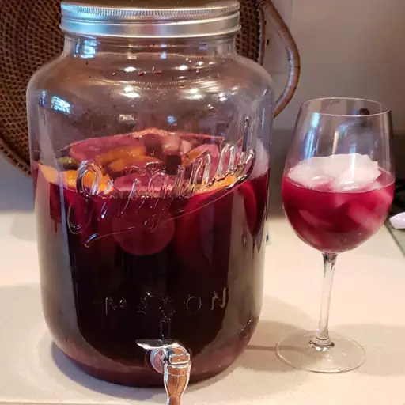

Sangria! Sangria!

Description
The best sangria recipe I've been able to hone to perfection for summer parties! I like to use a fruity Spanish red wine, such as Garnacha.
Ingredients
- 1 (750 mililiter) bottle dry red wine
- 1⁄2 cup brandy
- 1⁄2 cup triple sec
- 1⁄3 cup frozen lemonade concentrate
- 1⁄3 cup orange juice
- 1⁄4 cup lemon juice
- 1⁄4 cup white sugar (Optional)
- 1 medium orange, sliced into rounds
- 1 medium lime, sliced into rounds
- 8 maraschino cherries
- 2 cups carbonated water (Optional)
Directions
- Mix together red wine, brandy, triple sec, lemonade concentrate, orange juice, lemon juice, and sugar in a bowl. Add orange, lemon, and lime slices and maraschino cherries.
- Serve immediately over ice, or refrigerate 8 hours to overnight for best flavor.
- For a fizzy sangria, add club soda or ginger ale just before serving.